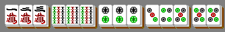
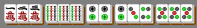

Project Euler 696
Project Euler 696
题目
Mahjong
The game of Mahjong is played with tiles belonging to \(s\) suits. Each tile also has a number in the range \(1\ldots n\), and for each suit/number combination there are exactly four indistinguishable tiles with that suit and number. (The real Mahjong game also contains other bonus tiles, but those will not feature in this problem.)
A winning hand is a collection of \(3t+2\) Tiles (where \(t\) is a fixed integer) that can be arranged as \(t\) Triples and one Pair, where:
A Triple is either a Chow or a Pung
A Chow is three tiles of the same suit and consecutive numbers
A Pung is three identical tiles (same suit and same number)
A Pair is two identical tiles (same suit and same number)
For example, here is a winning hand with \(n=9\), \(s=3\), \(t=4\), consisting in this case of two Chows, two Pungs, and one Pair:

Note that sometimes the same collection of tiles can be represented as \(t\) Triples and one Pair in more than one way. This only counts as one winning hand. For example, this is considered to be the same winning hand as above, because it consists of the same tiles:

Let \(w(n, s, t)\) be the number of distinct winning hands formed of \(t\) Triples and one Pair, where there are \(s\) suits available and tiles are numbered up to \(n\).
For example, with a single suit and tiles numbered up to \(4\), we have \(w(4, 1, 1) = 20\): there are \(12\) winning hands consisting of a Pung and a Pair, and another 8 containing a Chow and a Pair. You are also given that \(w(9, 1, 4) = 13259\), \(w(9, 3, 4) = 5237550\), and \(w(1000, 1000, 5) \equiv 107662178 \pmod{1\,000\,000\,007}\).
Find \(w(10^8, 10^8, 30)\). Give your answer modulo \(1\,000\,000\,007\).
解决方案
令\(N=S=10^8,T=30.\)把一手牌按花色拆开：对每个花色 \(\sigma\)，用计数序列\(c^{(\sigma)}_1,\ldots,c^{(\sigma)}_n, 0\le c^{(\sigma)}_i\le 4\)表示该花色点数 \(i\) 取了多少张。不同花色互不影响：顺子/刻子/对子都只在同一花色内发生。
因此总体计数的合并只需知道单花色能贡献多少个三元组，以及是否含对子。
定义单花色数量：\(C_q(n)\)表示在一个花色内，能组成恰好 \(q\) 个三元组且不含对子的不同多重集合数；\(A_q(n)\)表示在一个花色内，能组成恰好 \(q\) 个三元组且含 1 个对子的不同多重集合数。
把它们定义成生成函数（只需到次数 \(t\)），那么有：\(\displaystyle C(y)=\sum_{q=0}^{t} C_q(n)y^q,A(y)=\sum_{q=0}^{t} A_q(n)y^q.\)
对每个花色，有两类选择：无对子（贡献 \(C(y)\)）或含对子（贡献 \(A(y)\) 并标记这花色用了对子）。令 \(x\) 表示是否用了对子，则单花色的二元生成函数是\(P(x,y)=C(y)+xA(y).\)
总共有 \(s\) 个花色、且全局必须恰好一个对子，因此答案是\(w(n,s,t)=[x^1y^t]P(x,y)^s.\)取 \(x^1\) 系数等价于选 1 个花色放对子，其余花色不放对子，从而\(w(n,s,t)= s\cdot [y^t]A(y)C(y)^{s-1}.\)接下来关键就是计算单花色的 \(C_q(n),A_q(n)\)。
固定一个花色，考虑计数序列 \(c_1,\ldots,c_n\)。我们从左到右处理点数，处理到位置 \(i\) 时，顺子可能跨越 \((i-2,i-1,i)\) 或 \((i-1,i,i+1)\)，因此需要记录前两列遗留了多少未完成的顺子。
对同一起点 \(i\)，若启动了 3 个完全重叠的 顺子（即三份 \((i,i+1,i+2)\)），它们一共消耗了点数 \(i,i+1,i+2\) 各 3 张牌。这与在三列各放一个 刻子 完全等价（同样各消耗 3 张），且不影响其它点数。
因此，在是否存在某种拆法的意义下，启动顺子的数量在每个位置只需保留 \(\bmod 3\) 的信息；超过\(2\)的部分可用局部替换转成刻子，不改变可分解性。又因为每列最多 \(4\) 张牌，\(\bmod 3\) 后的值只可能是 \(0,1,2\)。
在处理点数 \(i\) 时，设：\(a\in\{0,1,2\}\)表示还有 \(a\) 个 顺子 是从 \(i-2\) 开始的，它们在 \(i\) 需要各取 1 张。\(b\in\{0,1,2\}\)表示还有 \(b\) 个 顺子 是从 \(i-1\) 开始的，它们在 \(i\) 需要各取 1 张；\(p\in\{0,1\}\)表示是否已经使用过 对子。把基本状态编码为 18 种：\((a,b,p)\)。
初始时还没开始任何顺子、也未放对子：\((a,b,p)=(0,0,0).\)假设当前列有 \(x\in\{0,1,2,3,4\}\) 张牌。先必须满足前面的顺子需求：需要 \(a+b\) 张，否则无解；如果此列选择放对子（只能在 \(p=0\) 时），还需额外消耗 2 张。
因此对是否在此列放对子的两种选择可能都可行。设 \(d=1\) 表示当前列选择放对子，\(d=0\) 表示不放对子。分别检查：\(x\ge a+b+2\cdot d.\)令\(r=x-a-b-2\cdot d(\ge 0)\)为剩余张数。剩余张数要分成若干个刻子：消耗 3 的倍数；若干个从 \(i\) 开始的新顺子：每个消耗 1 张，并在后两列各留下 1 个需求。
根据上面的模 3 归约，我们可取新启动顺子的数量\(s \equiv r \pmod 3, s\in\{0,1,2\},\)于是 \(r-s\) 自动是 3 的倍数（可全用刻子吸收）。那么下一步（处理 \(i+1\)）时：原来从 \(i-1\) 开始的 顺子（数量 \(b\)）会变成“从 \(i-1\) 开始、在 \(i+1\) 还需要 1 张”的遗留，相当于新的 \(a' = b\)；新启动的 \(s\) 个 顺子 会在 \(i+1\) 需要 1 张，相当于新的 \(b' = s\)；对子标记更新为 \(p' = p \lor d\)。
所以转移是确定的：\((a',b',p')=(b,r\bmod 3,p\lor d).\)是否放对子导致分支，因此这是一个 NFA（非确定有限自动机），共有 18 个基本状态。
对计数序列进行识别时，一个序列可能对应多条 NFA 路径，但我们要数的是序列个数（多重集合个数），不能按路径数重复计数。
标准做法：把 NFA 的状态集合用子集表示并进行确定化。DFA 的每个状态就是一组可能的 NFA 基本状态子集。
从初始子集 \(\{(0,0,0)\}\) 出发，对输入符号 \(x\in\{0,1,2,3,4\}\) 计算可达子集并 BFS 扩展。实际可达的子集只有 \(68\) 个（远少于 \(2^{18}\)）。
对于接受条件：为了保证最后没有未完成的顺子，需要末尾两列也视为 0（等价于附加两个虚拟 0），这会强制所有遗留 \(a,b\) 清零。实际实现中只需在最终状态要求包含清空遗留的基本状态即可。因此：无对子可接受，此时DFA 子集中包含基本状态 \((0,0,0)\)。含对子可接受，此时DFA 子集中包含基本状态 \((0,0,1)\)。
同时还需满足总牌数：无对子时总牌数 \(\equiv 0\pmod 3\)，即总牌数 \(=3q\)；含对子时：总牌数 \(\equiv 2\pmod 3\)，即总牌数 \(=3q+2\)。
直接按长度 \(n=N\) 做逐列 DP 显然不可行。但这里有一个关键事实：整手牌总数仅为 \(3T+2\)张，因此任一花色实际使用的牌数也不超过 \(3T+2\)，从而该花色的计数序列中非零位置非常稀疏。这使得我们可以先只统计非零结构和必要的内部断点，再用组合数一次性补上大量零列。
最终，我们把单花色序列中满足 \(c_i>0\) 的位置按连续性分成若干块。相邻块之间至少要有一个 \(0\)，否则应视为同一块。
- 若该花色 不含对子，则每个非空块至少包含 \(1\) 个三元组（否则无法构成可分解且牌数为 \(3\) 的倍数的局部结构），因此块数至多为 \(q\)，不超过\(t\)。
- 若该花色 含对子，则可能有一个块只包含一个对子（\(2\) 张）而不含三元组，其余非空块仍至少各含 \(1\) 个三元组，因此块数至多为 \(q + 1\)，不超过\(t + 1\)。
因此，内部零段（即块与块之间的零段）个数等于块数减一，不超过\(t\)。取更宽松的上界 \(t+1\) 也完全安全，后续写法会更统一。
把一个单花色计数序列中的每个内部零段压缩成一个单独的 \(0\) 标记；同时不在开头和结尾显式保留零（因为首尾零的长度可以最后统一用组合数处理）。于是得到一个核心串：字符取值为 \(\{0,1,2,3,4\}\)；非零字符表示该点数取牌张数；\(0\) 表示一个内部零段的占位符；不允许出现相邻两个 \(0\)（因为同一内部零段只保留一个标记）。
设核心串长度为 \(i\)，其中 \(0\) 标记出现了 \(k\) 次（即内部零段数为 \(k\)）。当把它还原为长度恰好为 \(n\) 的真实序列时，还需要补入 \(n-i\)个额外的零。它们可以分配到以下 \(k+2\) 个位置中：开头零段（可为空）；结尾零段（可为空）；每个内部零段（在已有一个 \(0\) 标记的基础上继续延长）。
因此是一个标准的隔板法计数，方案数为\(\dbinom{(n-i)+(k+2)-1}{(k+2)-1}=\dbinom{n-i+k+1}{k+1}.\)记\(\displaystyle C(i,k)=\binom{n-i+k+1}{k+1}.\)由于这里只会用到 \(k\le t+1\)，可以直接用乘积形式计算，不需要预处理到 \(n!\)。
现在，我们在前文构造出的 DFA 上对核心串做计数。
设 DFA 状态集合大小为 \(V\)（实际为 \(68\)），转移函数记作\(\delta(u,x), u\in\{0,\dots,V-1\},x\in\{0,1,2,3,4\}.\)定义计数函数\(f_i(j,k,\ell,u),\)表示长度为 \(i\) 的核心串前缀的方案数，其中：\(j\)表示该前缀对应的已用牌总数；\(k\)表示该前缀中内部零段（即 \(0\) 标记）个数；\(\ell\in\{0,1\}\)表示前缀最后一位是否为 \(0\)（\(\ell=1\) 表示是 \(0\)）；\(u\)表示读入该前缀后所在的 DFA 状态。
空串作为初始前缀，视作上一位是 \(0\)（这样可自然禁止开头先放 \(0\)）：\(f_0(0,0,1,\mathrm{START})=1,\)其余状态为 \(0\)。其中\(\mathrm{START}\)是DFA的初始状态。
对任意 \(x\in\{1,2,3,4\}\)，可在前缀末尾追加该符号。于是对于任意 \(\ell\in\{0,1\}\) 有\(f_{i+1}(j+x,k,0,\delta(u,x))\leftarrow f_i(j,k,\ell,u).\)这里最后一位变为非零，因此新标记为 \(\ell'=0\)。
只有当前缀最后一位不是 \(0\)（即 \(\ell=0\)）时，才能追加一个 \(0\) 标记；这对应开启一个新的内部零段。因此\(f_{i+1}(j,k+1,1,\delta(u,0))\leftarrow f_i(j,k,0,u).\)
当处理到长度 \(i\) 的核心串前缀时，我们允许它在此结束，但要求末位非零（否则核心串会以内部零段结尾，不符合定义），即 \(\ell=0\)。记：\(\mathcal U_0\) 为DFA 状态中包含 NFA 基本状态 \((0,0,0)\)的状态集合（对应无对子且顺子遗留清空）；\(\mathcal U_1\) 为“DFA 状态中包含 NFA 基本状态 \((0,0,1)\)”的状态集合（对应已使用对子且顺子遗留清空）。
那么若 \(j\equiv 0\pmod 3\)，令 \(q=j/3\)，则对所有 \(u\in\mathcal U_0\) 累加\(\displaystyle C_q(n)\leftarrow \sum_{k\ge 0} f_i(j,k,0,u)C(i,k).\)若 \(j\equiv 2\pmod 3\)，令 \(q=\lfloor j/3\rfloor\)，则对所有 \(u\in\mathcal U_1\) 累加\(\displaystyle A_q(n)\leftarrow \sum_{k\ge 0} f_i(j,k,0,u),C(i,k).\)
由于非零符号总共不超过 \(3t+2\) 个，内部零段标记不超过 \(t+1\) 个，所以核心串长度满足\(i\le (3t+2)+(t+1)=4t+3.\)因此只需计算到这个范围即可。最后还需补上空花色（完全不取牌）的情形，它对应\(C_0(n)=1,\)这一项不会被非空核心串统计到，因此手动加入。至此即可得到单花色多项式\(\displaystyle C(y)=\sum_{q=0}^{t}C_q(n)y^q,A(y)=\sum_{q=0}^{t}A_q(n)y^q.\)
接下来把单花色结果合并到 \(s\) 个花色。
设对某一组花色，其总三元组数的计数多项式记为一对\((F(y),G(y)),\)其中：\(F(y)\)表示不含对子；\(G(y)\)表示恰好含一个对子。
若两组花色对应的结果分别为 \((F_1,G_1)\) 与 \((F_2,G_2)\)，则合并后满足\(F = F_1F_2,\)以及\(G = F_1G_2 + G_1F_2.\)这里乘法均为按三元组数的普通多项式乘法，并在次数 \(>t\) 时截断。
因此可以把单花色对象\((C(y),A(y))\)通过快速幂合并 \(s\) 次，最终答案就是合并结果中 \(G(y)\) 的 \(y^t\) 系数，即
\[ w(n,s,t)= [y^t]G(y). \]
代码
1 |
|